在第4章中，我展示了一个在线程之间使用消息传递框架来传递消息的例子，其中简单实现了ATM中的代码。下面给出该示例的完整代码，其中包含了消息传递框架。
清单C.1展示了消息队列。其中以指向基类的指针存放了一列消息，特定的消息类别使用从该基类派生的类模板来处理。压入一个条目，即是构造一个包装类的相应实例并且存储一个指向它的指针。弹出一个条目，即是返回该指针。由于message_base
类没有任何成员函数，弹出线程在能够访问存储的消息之前，需要将此指针转换为一个合适的wrapped_message<T>
指针。
清单C.1 简单的消息队列
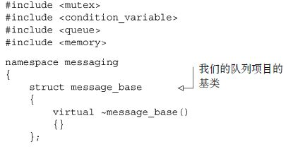
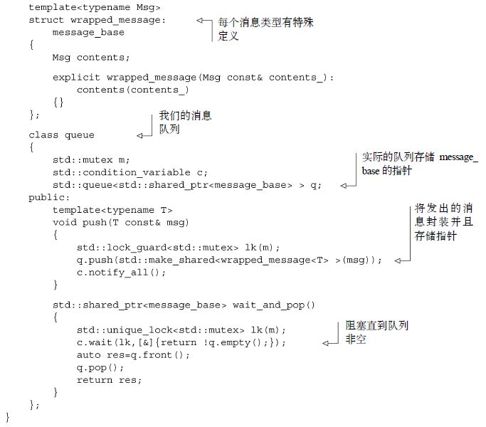
发送消息是通过清单C.2所示的sender
类实例来处理的。它仅仅是对消息队列的简单包装，只允许消息被压入。复制sender
的实例仅仅复制指向队列的指针，而非队列本身。
清单C.2 sender类
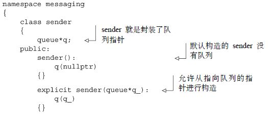
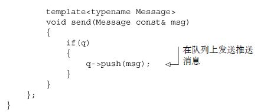
接收消息要稍微复杂一点。你不仅要等待队列中的消息，还需要检查其类型是否符合所等待的消息类型，并且调用相应的处理函数。这些都始于清单C.3中展示的receiver
类。
清单C.3 receiver类
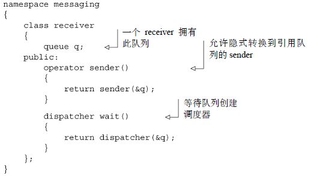
与sender
仅仅引用一个消息队列不同，receiver
拥有它。你可以使用隐式转换来获得一个引用该队列的sender
类。进行消息调度的复杂性始于对wait()
的调用，这将创建一个dispatcher
对象，它从receiver
中引用该队列。dispatcher
类展示在下一个清单中，正如你所见，这项工作是在析构函数
中完成的。在清单C.4的例子中，此工作是由等待消息和调度消息组成的。
清单C.4 dispatcher类
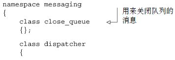
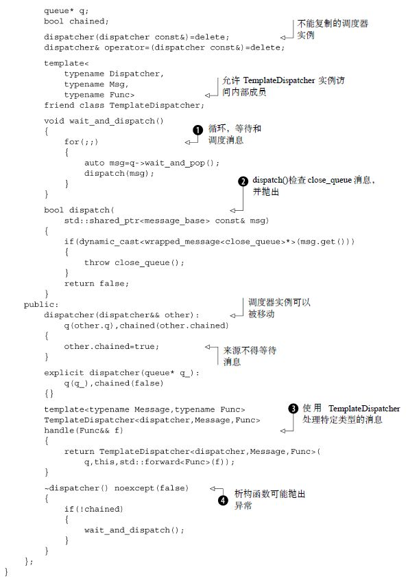
从wait()
返回的dispatcher
实例将会被立刻销毁，因为它是临时的，并且如前所述，析构函数承担了这项工作。析构函数调用wait_and_dispatch()
，这是一个等待消息并将其传递给dispatch()
的循环❶。dispatch()
本身❷非常简单，它检查消息是否为一个close_queue
消息，如果是，就抛出一个异常；否则，它返回false
来指示该消息未被处理。close_queue
异常正是析构函数被标记为noexcept(false)
的原因；如果没有这个注解，析构函数的默认异常规定将会是noexcept(true)
❹，表明没有异常能够被抛出，那么close_queue
异常就会终止程序。
然而你并非经常去主动调用wait()
，大部分时间你会希望去处理一个消息。这就是handle()
成员函数❸的用武之地。它是一个模板，并且消息类型是无法推断的，所以你必须指定待处理的消息类型，并且传入一个函数（或者可调用的对象）来处理它。handle()
自身将队列、当前的dispatcher
对象和处理函数传递给一个新的TemplateDispatche
r类模板的实例，来处理指定类型的消息，这些展示在清单C.5的例子中。为什么要在等待消息之前就在析构函数里测试chained
的值呢？因为这样不仅可以防止移入的对象等待消息，而且允许你将等待消息的重任交给新的TemplateDispatcher
实例。
清单C.5 TemplateDispatcher类模板
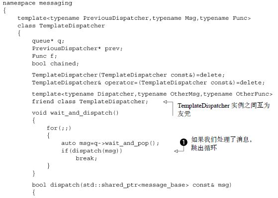
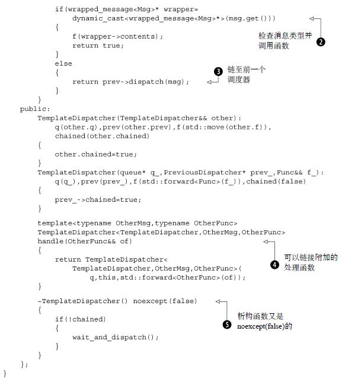
TemplateDispatcher<>
类模板是基于dispatcher
类构建的，并且二者几乎雷同。尤其是析构函数仍然调用了wait_and_dispatch()
来等待一个消息。
如果你处理了消息，那么就不会抛出异常，所以你需要在消息循环❶中检查你是否真的处理了消息。当你成功处理了消息时，消息处理即行停止，你就可以等待下一时刻的另一组消息。如果你恰好得到了一条匹配的消息类型，那么所提供的函数就会被调用❷，而不是抛出异常（尽管处理函数自身可能会抛出异常）。如果没有得到匹配的消息，那么就链接至前一个dispatcher
❸。在首个实例中，它就是dispatcher
，但如果你将调用链接至handle()
函数❹，以允许多种类型的消息被处理，这可能会先于TemplateDispatcher<>
初始化，如果消息不匹配的话，这将会反过来链接到前一个句柄上。因为所有句柄都可能引发异常（包括dispatcher
为close_queue
消息的默认句柄），析构函数必须再次声明为noexcept(false)
❺。
这个简单的框架允许你将任意类型的消息压入队列中，然后在接收端有选择地匹配你能够处理的消息。它同时允许你为了压入消息而绕过对队列的引用，同时保持接收端的私密性。
为了完成第4章中的示例，在清单C.6中给出了消息，清单C.7、清单C.8和清单C.9中给出几种状态机，驱动代码在清单C.10中给出。
清单C.6 ATM消息
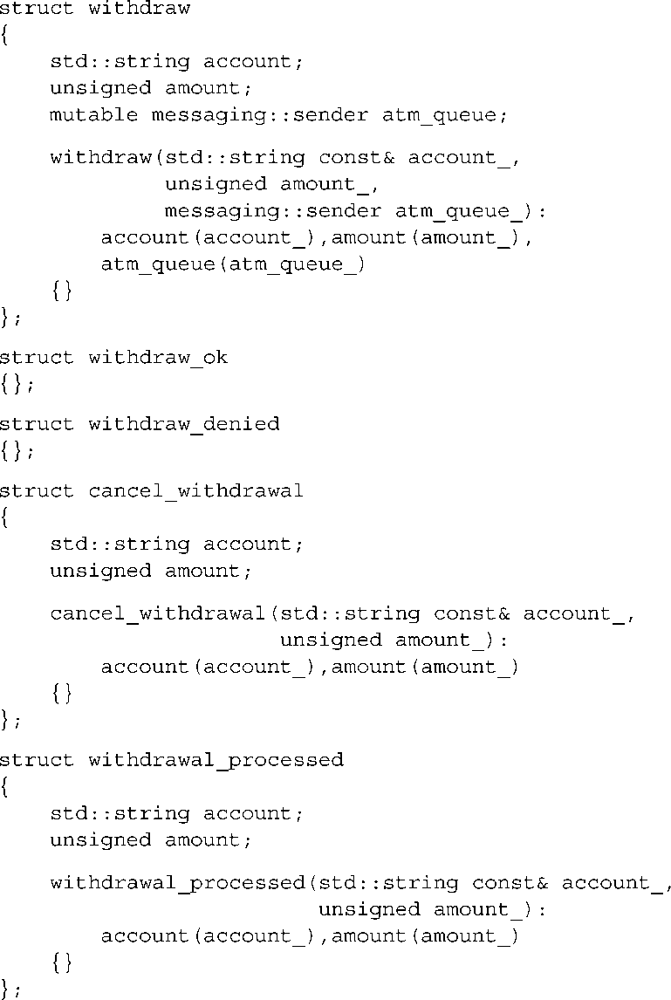
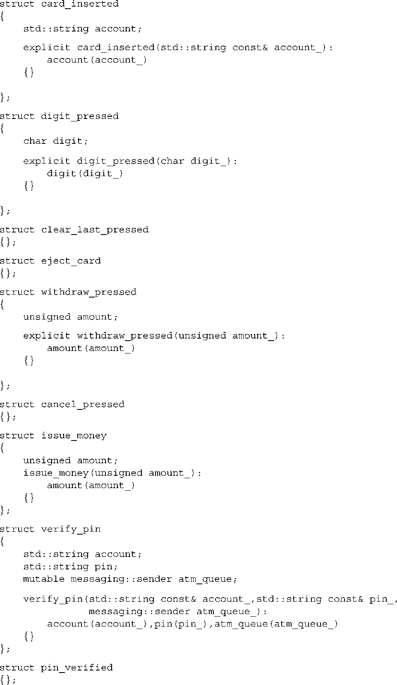
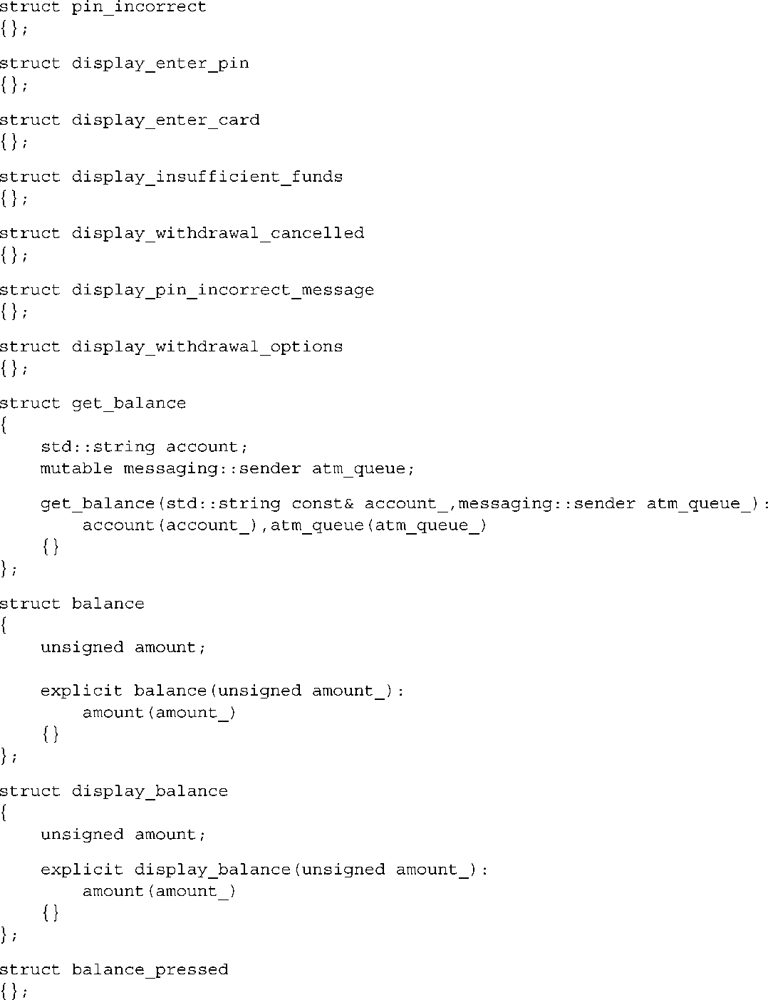
清单C.7 ATM状态机
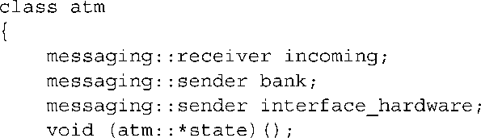
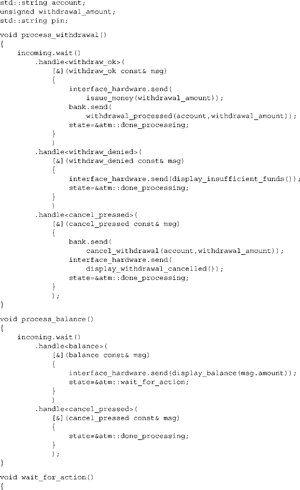
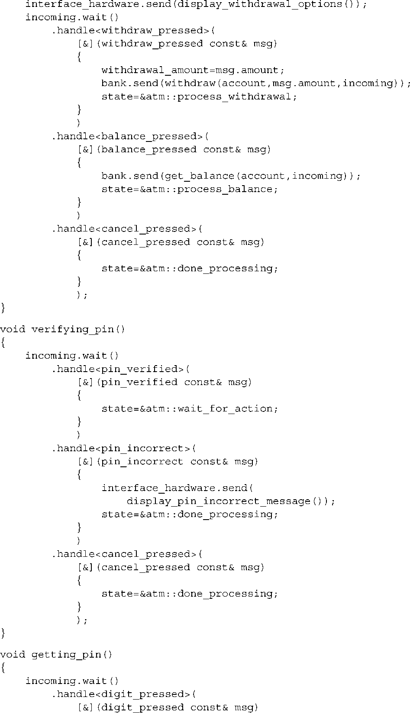
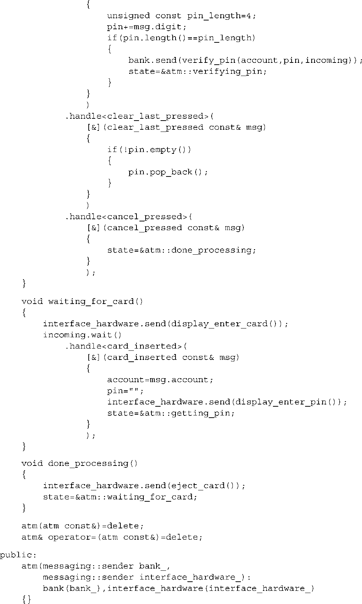
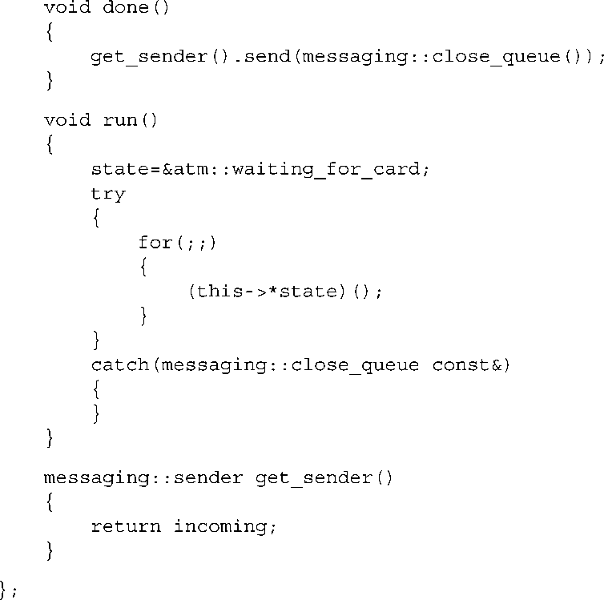
清单C.8 银行状态机
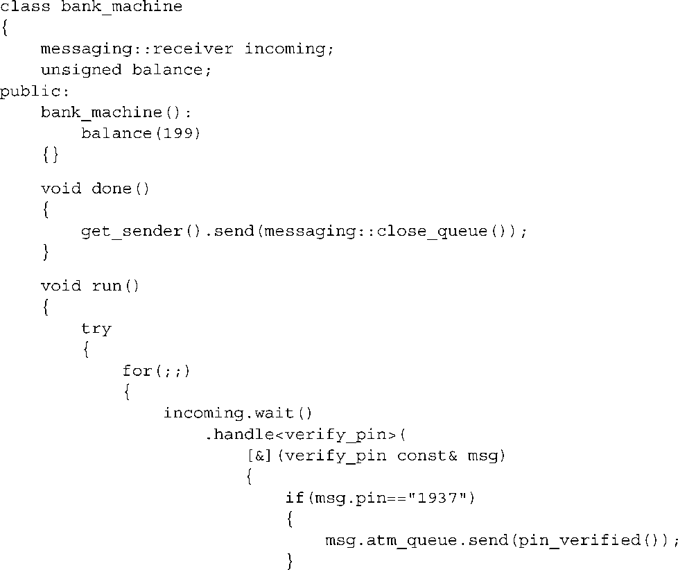
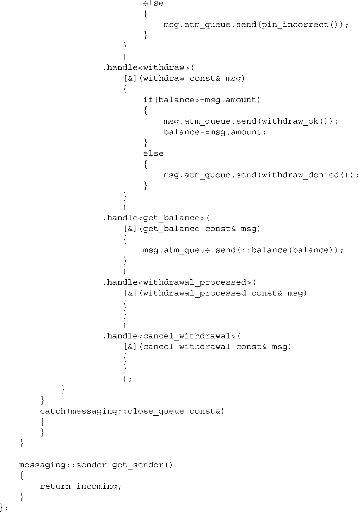
清单C.9 用户界面状态机
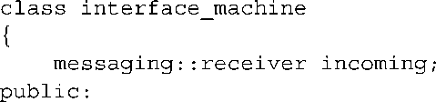
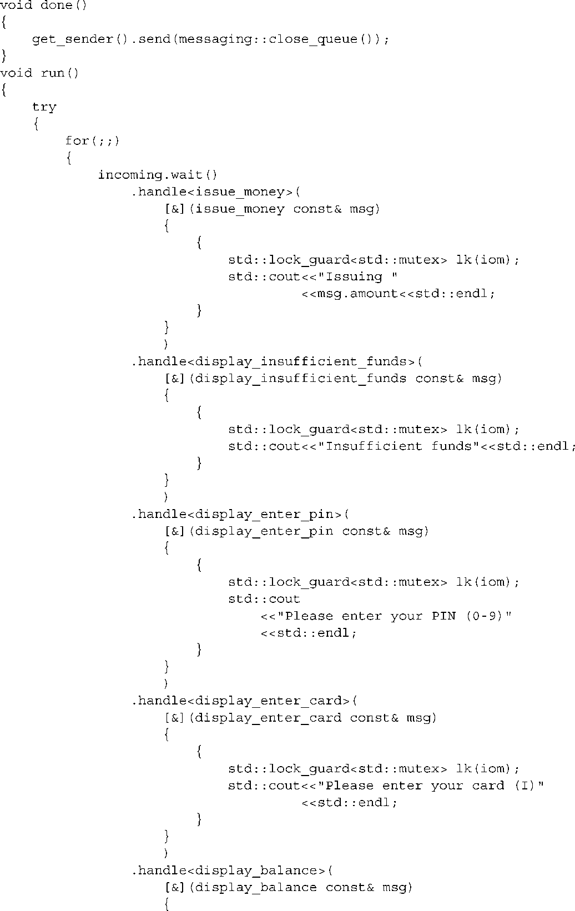
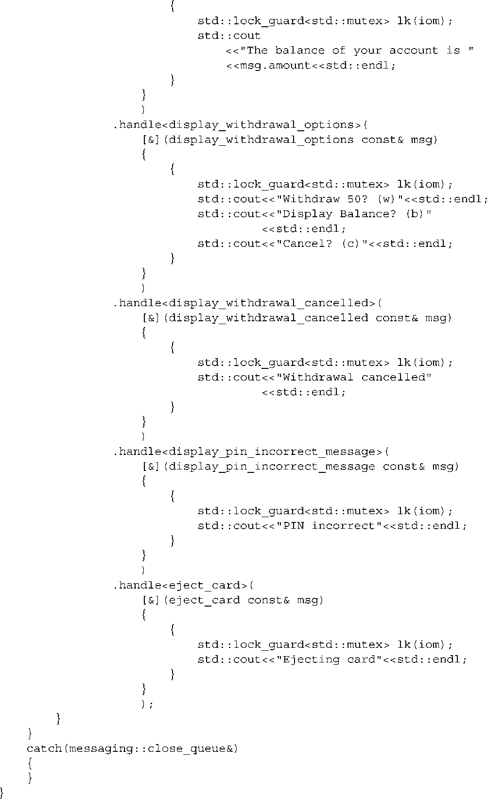
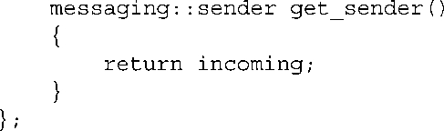
清单C.10 驱动代码
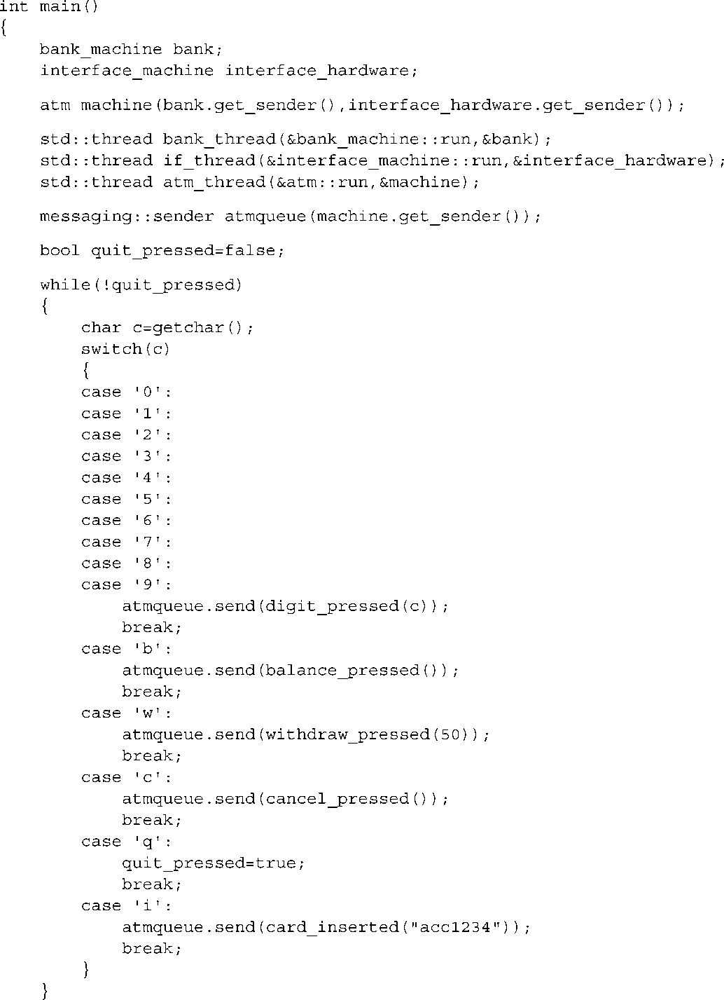
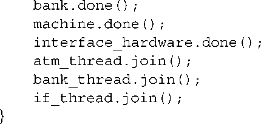